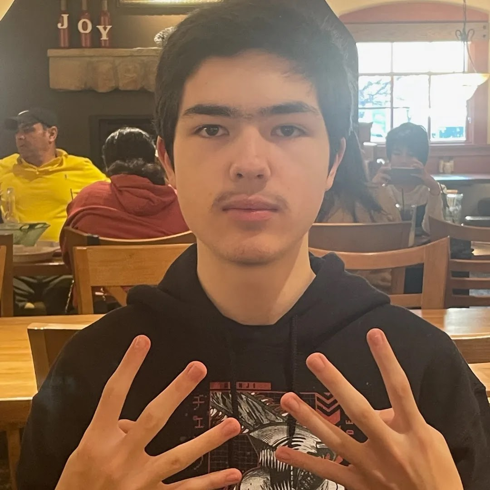

ESPORT
ABOUT ME
Read a bit about my history of gaming
About
One of the consoles that really influenced my gaming journey was the Wii, since it was my first game console. I never cared much for the Nintendo handheld devices like the DS and 3DS, but I always remember playing classic games like Lego Star Wars, Mario Kart Wii, Twilight Princess, and Smash Bros Brawl. Also, this console led me to being a Nintendo fan, which helped me meet some of my best friends to this day.
The PS4 was really my first introduction to a graphically powerful console, and I think that it was an important stepping stone to finding a lot of the games I love. Games like Persona 5, Spider-Man PS4, and even more recent games like Ghost of Tsushima, and Final Fantasy 7 Remake showed me beautiful stories and visuals only found on modern hardware.
The game system I think had the most influence on my gaming journey was my PC. There is something special about the satisfaction of building something you have used every day since, and to me, my PC has given me that feeling. Outside of playing video games, I have learned so much about gaming and games from the countless hours of use since I have been using this PC.
1400 hours
Smash Bros Ultimate
A game I always come back to
200 hours
Guilty Gear Strive
My current favorite fighting game
800 hours
Mario Kart Wii
My favorite of my childhood games
500 hours
Tetris
A classic puzzle game
Games I'm Looking Forward To


I'm already a big fan of Street Fighter 5, so it's only natural that I would be extremely excited for its sequel, SF6. Another Upcoming fighting game is Fraymakers, a crossover game like Smash Bros, although this game is currently in early access. Lastly, I'm waiting for Marvel's Spider Man 2, a sequel to the PS4 game I love so much.
Footer Banner Section
CONTACT INFO
